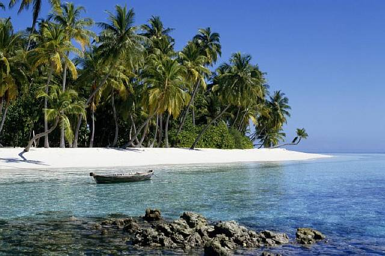

tel: 0895461160
My Site
Нов Остров до Варна
Защо ѝ е на държавата изкуствен остров? Този въпрос може да звучи като дошъл отникъде, но всъщност за него има повод. Край курорта Св. Св. Константин и Елена до Варна ще се строи изкуствен остров с пари от държавния бюджет. Данъкоплатците вече сме дали близо 6 милиона лева. Според властите изкуственият остров е необходим за укрепване на брега. Това обаче не е така, показват документи на държавни експерти. Дори и местните власти във Варна не знаят или поне не казват за какво точно е необходим този остров. Строителството му обаче върви по план. Редица институции придвижват бързо документите, а накрая се намират и парите. За острова, който никой така и не обяснява за какво е.
Парите вече са дадени
Малко преди края на управлението на третото правителство на Бойко Борисов за проекта са отпуснати 5 775 000 левадържавно финансиране, съобщи през април “Дневник”. Конкурсът за избор на фирма строител е завършил, има подписандоговор и строителството може да започне. Въпросът е каква функция ще изпълнява това съоръжение. Според възложителите то е нужно, за да се укрепи брега и да се запази плажа. Това обаче противоречи на експертно становище на държавната “Геозащита”, цитирано в отговор на министъра на регионалното развитие Виолета Комитова на питането на депутатите Стела Николова и Цецка Бачкова (“Демократична България”). Противоречи и на намеренията, изказани по-рано от главния архитект на Варна - основният инвеститор в изграждането на буната. Според думи на арх. Виктор Бузев от 2017 г., цитирани от редица местни и национални медии, изкуственият остров ще има брегоукрепителни функции, но освен това се предвижда евентуално изграждане на яхтено пристанище и подводен ресторант. Сега арх. Бузев отрича това. За какво в крайна сметка ще служи изкуственият остров и струва ли си тази инвестиция?
Кога се появява тази идея
Намерението за изграждане на изкуствени острови край Варна за пръв път се появява в изказване на главния
архитект
на Варна Виктор Бузев от лятото на 2017 г. Според думите му, цитирани от местни и
национални медии, край Варна ще
бъдат изградени четири изкуствени острова с брегозащитна функция - един в курорта Св. Св. Константин и Елена
и три в
Златни пясъци. “Нашата задача е да маркираме в (устройствените) планове такава възможност, в случая – срещу
бившия
минерален басейн на някогашния курорт “Дружба”. След като островът бъде изграден, ще допуснем строителството
на
яхтено пристанище и евентуален подводен ресторант”, каза Бузев за съоръжението, планирано край Св. Св.
Константин и
Елена, цитиран тогава от “Дневник”.
Подготовката започва следващата година. В отговор на регионалния министър в служебното правителство Виолета
Комитова
на питане на депутатите Стела Николова и Цецка Бачкова пише, че през август 2018 г.
в
министерството е постъпило
писмо от тогавашния областен управител на Варна, с което той пита коя институция трябва да разреши
изработването на
подробен устройствен план (ПУП) за съоръжението. Министерството е отговорило, че Общинският съвет на Варна
трябва да
направи това.
През 2019 г. кметът на Варна Иван Портних е предложил приемането на устройствения
план, а в
последното заседание на
предишния си състав - на 26 септември 2019 г., непосредствено преди местните избори, Общинският съвет на
Варна е
одобрил плана, който дава възможност за изграждането на изкуствения остров.
Кога, ако не сега
Обществената поръчка за изграждането на съоръжението, което в документите е описано като буна, е обявена на 12 април 2021 г. Възложители според документите в Агенцията за обществени поръчки са Областната управа на Варна и Община Варна. Договорът с фирмата, която е спечелила конкурса - “Ескана” АД - е сключен на 14 юли и е за близо 4,74 млн. лева. Междувременно Министерският съвет е отпуснал пари за изграждането на съоръжението. С постановление от 18 февруари 2021 г. третото правителство на Бойко Борисов е отпуснало на Община Варна 5 775 000 лева от националния бюджет за изграждане на буна край Св. Св. Константин и Елена. Решението за отпускане на средствата е взето след предложение на тогавашния министър на вътрешните работи Христо Терзийски на базата на решение на Междуведомствената комисия за възстановяване и подпомагане. От пресцентъра на МВР не посочиха конкретните мотиви, с които решението е взето. На заседанието, на което е прието то, са участвали представители от всички министерства. Сега срещу т. нар. Малък плаж в курорта, където се строи нов хотел на мястото на някогашния “Бор”, има “изградени съоръжения със странен вид и форма и неясно предназначение”, посочва регионалният министър Виолета Комитова в отговора си до депутатите.
Нужен ли е изкуствен остров
Въпросът е дали инвестицията от близо 5 млн. лева 6 млн. лева държавни пари в това съоръжение
има
смисъл и
кой и за какво ще го използва. Институциите, които са възложили и са отпуснали финансиране за проекта,
твърдят, че
той е нужен за защита на плажа и
стабилизиране на брега. Регионалният министър обаче цитира в отговора си до депутати становища, които
поставят под
съмнение дали изграждането на изцяло ново съоръжение е необходимо.Според настоящия областен управител на
Варна Марио
Смърков, назначен на поста през май, изграждането на буната е необходимо, за да бъде предпазен брега от
“вредното
въздействие на водите” и за “защита от абразия, ерозия и други геодинамични процеси”. “В момента този плаж е
незащитен и неговото стабилизиране и съхраняване може да се осъществи само със защита от
съоръжение”, посочи той в писмен отговор до Свободна Европа, като се позова на извършени предпроектни
проучвания.
“[Съществуващата] буна “Минерален басейн” е изпълнена частично и по същество в момента не способства за
достигане на
описаните цели и функции.” Становището на държавното дружество “Геозащита”, цитирано в отговора на
регионалния
министър на питане на депутати,
обаче, гласи друго. “Съгласно становището на геозащитното дружество хидротехническото съоръжение, изградено
на това
място през 70-те 80-те и
90-те години е ремонтирано, в добро състояние и изпълнява функциите си”, се посочва в отговора на министър
Виолета
Комитова. В него се посочва още, че в Генералната схема на българското Черноморско крайбрежие за този
участък
не се
препоръчва изграждане на напречни съоръжения (буни), които не биха били ефективни.
Община Варна, по чийто бюджет е прехвърлена сумата от държавния бюджет, с която ще се финансира изграждането
на
буната, посочи, че не е възложител на обществената поръчка, макар това да е посочено в документите, и отказа
да
отговаря на въпроси.
Кой и как ще го използва
Необходимостта от изграждането на изкуствения остров за защита на брега остава под въпрос. Под въпрос е и как ще се използва съоръжението занапред - само за защита, ако изобщо е ефективно, или и за забавление. Според думите на главния архитект на Варна Виктор Бузев от 2017 г. “след като островът бъде изграден, ще допуснем строителството на яхтено пристанище и евентуален подводен ресторант”. Сега арх. Бузев отрича да има такива планове. “Буната е изключителна държавна собственост. Няма предвиден атракцион по документи. Това е изцяло брегозащитно съоръжение”, каза той пред БНР през април. Бузев обаче не изключи възможността държавата да реши да отдаде на концесия съоръжението. “Дали държавата ще реши да го отдава на концесия, кога, как, на кого и защо, това ние не можем да пророкуваме”, каза той.
Според отговорите на областния управител до Свободна Европа към настоящия момент няма процедура за отдаване на концесия на съоръжението, което тепърва ще се строи. Но ако бъде отдадено на концесия, кой ще го вземе? Според депутатите Стела Николова и Цецка Бачкова това ще е дружеството “Св. Св. Константин и Елена”, свързвано с бизнес групата около “Химимпорт”.
Свободна Европа попита “Св. Св. Константин и Елена Холдинг” дали има намерение да вземе изкуствения остров на концесия, ако той бъде даден, но от дружеството отрекоха. “В случай, че такава процедура бъде започната, представляваното от нас дружество не предвижда да участва в нея, както и няма инвестиционни намерения, отнасящи се до този обект”, посочиха от дружеството. Те обаче оцениха положително проекта за изграждане на буната, която според тях ще помогне за запазване и разширяване на плажната ивица.Разбира се, няма как да не отчетем значението от изграждането на подобен тип съоръжение за запазване на територията на бреговата ивица. Брегозащитната му функция ще намали силата на вълновото въздействие върху “Малък плаж” и ще се намалят сезонните му колебания, като се очаква пряко да доведе до увеличение на територията на плажната ивица”, посочиха от дружеството.